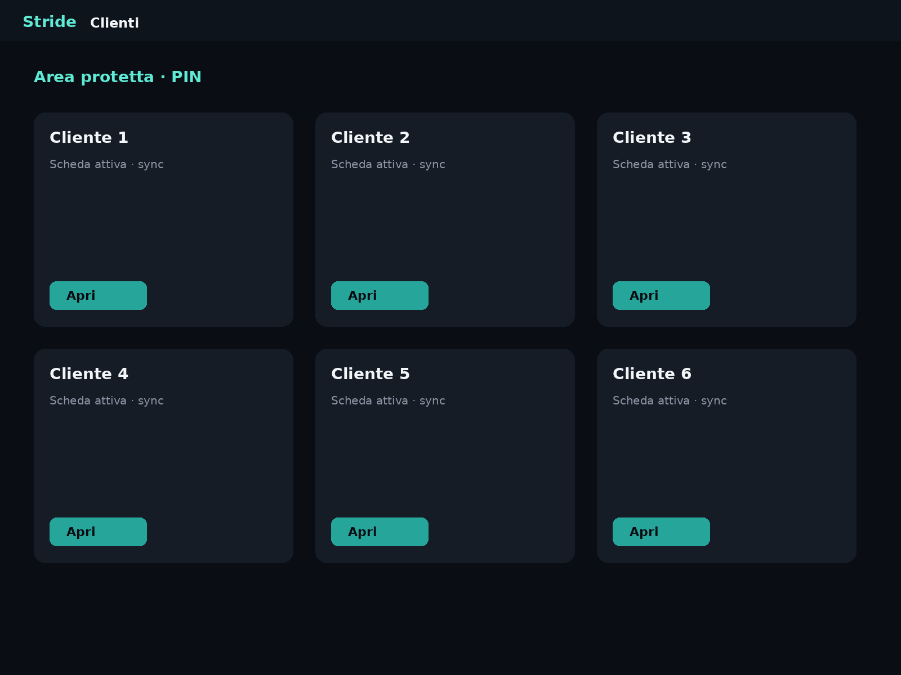
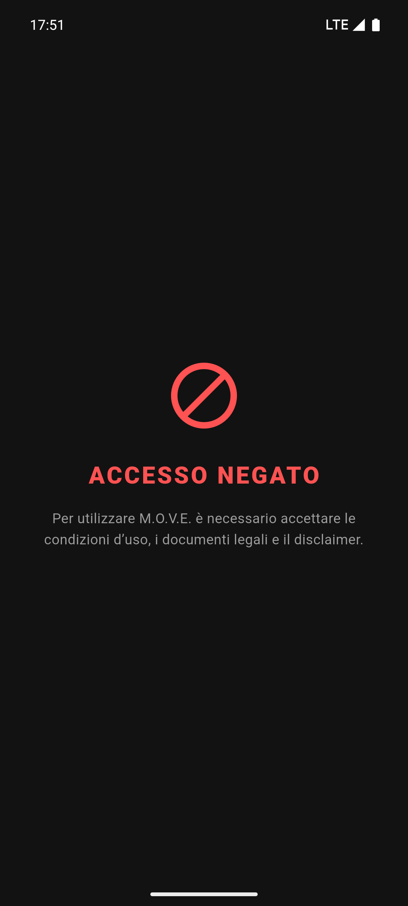

Distribuzione da catalogo master
Seleziona gruppi o schede dal profilo master e assegnale in blocco a N clienti; avviso se esistono già schede omonime.
Il ritmo che conta.
Schede, GPS e Apple Watch in sync. Ogni serie ha un perché.


Android · iPhone · iPad · Apple Watch
Una sola app. Due mondi.
Stride unisce runner guidato, tecniche avanzate e GPS outdoor — sul telefono e al polso — così atleti e trainer restano sullo stesso ritmo.
Dalla scheda al polso: le funzioni che fanno la differenza.
Scopri Apple Watch → Funzioni gym e studio → Scopri iPad e Studio → Import AI da foto → Esplora tutte le schermate →
Apple Watch
L’allenamento al polso, in sync con iPhone.
Lista schede, avvio, serie e fine sessione senza togliere il telefono dalla tasca — analytics e storico tornano su iPhone.
Vedi piani Athlete Apple Watch · sync con iPhone
Studio su iPad
Il tavolo di lavoro del trainer e della gym.
Su iPad gestisci profili, schede e consegna ai clienti: sull’app, via WhatsApp o in PDF brandizzato — da Trainer Pro fino a Studio & Gym.

Full Body A
iPad Pro
1 · Clienti
Vedi piani Trainer e Studio iPad · Trainer Pro → Studio & Gym
Piano Pro · Studio & Gym
Schede master, clienti, consegna WhatsApp/PDF/JSON, database personalizzato, sicurezza patologie e backup — tutto in un’unica area trainer protetta da PIN.
Seleziona gruppi o schede dal profilo master e assegnale in blocco a N clienti; avviso se esistono già schede omonime.
Vista per atleta o per scheda: cerca, seleziona multiplo, archivia o elimina. Notifica email BCC opzionale agli interessati.
Elimina schede obsolete su più profili in un’unica operazione — ideale per cambi stagione o fine ciclo.
Export con profilo, schede ed esercizi custom incorporati. L’atleta (o un collega con la stessa app) importa e sceglie i clienti destinazione.
Tabella rapida o manuale completo per scheda, con logo studio. Export sequenziale per privacy; share sheet nativo verso WhatsApp, Mail o stampa.
Scheda pronta per la chat WhatsApp; badge «INVIATA» sulle schede già consegnate e invio alle Apple Watch dei clienti.
Editor database: crea esercizi con muscoli, attrezzo, tipologia, difficoltà e note. Gestisci muscoli, attrezzi e categorie del catalogo.
Catalogo patologie/limitazioni motorie personalizzabile; ogni esercizio indica per quali condizioni è sconsigliato.
Esporta manuali PDF per Upper body, Lower, Core, Mobilità o database intero — con branding studio per reception e formazione staff.
Anagrafica completa: patologie attive, sport, protocolli mobilità (Studio), biometria e obiettivi — tutto filtrato per cliente.
In selezione esercizi gli movimenti in conflitto con il profilo vengono nascosti; banner in sessione e avvisi su PDF/immagini export.
In allenamento, sostituisci un esercizio restando sullo stesso gruppo muscolare — coerenza di stimolo senza rifare la scheda.
Fino a 8 clienti (Pro) o illimitati (Studio): ricerca, duplica ed elimina batch, export CSV biometria e storico per reportistica.
Backup JSON del catalogo trainer (esercizi custom e protocolli); archivio ZIP storico sessioni + grafici sul tuo cloud (Athlete Pro+).
Appuntamenti trainer nel calendario, logo e nome studio su ogni PDF, area Pro con PIN e condivisione file tra colleghi via export/import.
WhatsApp e Mail usano il share sheet del dispositivo (PDF, JSON o immagine). L’import JSON richiede Stride sul telefono dell’atleta o del collega. Free e Athlete: profilo personale singolo; multi-cliente da Piano Pro.

Import intelligente
Dalla carta allo schermo in un tocco.
Scatta o seleziona la foto di una scheda cartacea o di uno screenshot: l’AI estrae esercizi, serie e recuperi e li trasforma in una routine digitale editabile.
Ancora di più
Oltre a iPad e import AI, Stride spinge su ritmo, sicurezza e controllo.
Analizza trend peso, composizione e obiettivi per cliente — utili in Studio e Athlete Pro.
Metodologia strutturata per obiettivi e livelli: schede coerenti, non improvvisate.
Filtro limiti motori e protocolli di mobilità: adatta gli esercizi al profilo reale.
Vasche con stili target, corsa GPS con mappa e voce al km — anche da Watch.
Pianifica sessioni, riprendi da dove hai lasciato, esporta JSON/ZIP e PDF brandizzati.
Manuali completi per muscoli, attrezzi e mobilità — brandizzati con logo studio (Piano Pro+).
Assegna, archivia ed elimina schede su più atleti; duplica profili e export CSV biometria/storico.
Interfaccia IT, EN, DE, FR, ES — schede e date localizzate per atleti e studi misti.
Scorri le viste principali dell'app.
#01 · 01-home.png
Gruppi, routine, template e avvio allenamento. Condivisione schede e accesso area studio.
#02 · 02-runner.png
Guida esercizio per esercizio: recupero, TTS, uno-due, tecniche avanzate e riepilogo finale.
#03 · 03-calendar.png
Vista mensile e giornaliera con sessioni programmate, completate e appuntamenti PT.
#04 · 04-progress.png
Volume, grafici e metriche distanza/HR provenienti anche dalle sessioni Watch.
#05 · 05-history.png
Storico filtrabile con export JSON e archivio ZIP (Pro) per backup e confronto.
#06 · 06-editor.png
Configura serie, recuperi e metodi avanzati: genera da riferimento, badge Auto/Modificato, ripristina suggerimento.
#07 · 07-settings.png
Voce, volume TTS sync Watch, guida ripetizioni, GPS di sessione e preferenze generali.
#08 · 08-watch-*.png
Dal polso: lista schede ricevute, avvio, sessione e fine — sync continuo con iPhone.
#09 · 09-gps-map.png
Traccia outdoor, passo, voce al km e target km o corsa libera (Athlete Pro+).
#10–11 · 10-trainer-ipad.png · 11-studio-ipad.png
Area PIN con clienti, distribuzione schede master, export JSON/PDF massivo, database esercizi e pannello admin.
#01 · 01-home.png

#08 · 08-watch-list.png
Movimento · Ottimizzazione · Vitalità · Evoluzione
Inizia gratis in app. Qui i piani Pro come nel paywall.
Pagamento unico · 2 mesi omaggio (−17%)
49.99€ / anno
Popolare
199.99€ / anno
499.99€ / anno
L’annuale si paga in un’unica soluzione e include 2 mesi omaggio (−17%). Disdici quando vuoi prima del rinnovo.
Stride è in distribuzione su Android e Apple. Scrivici per beta o info commerciali.
Info: maufer1@gmail.com